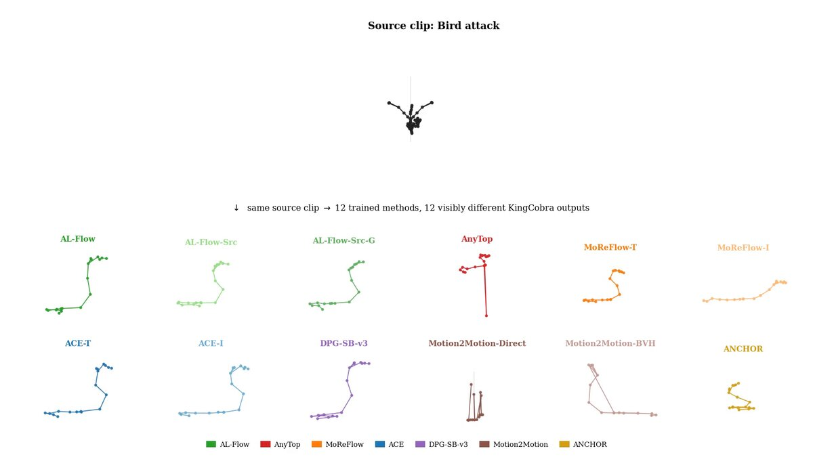

NewWhy Cross-Skeleton Retargeting Is Non-Identifiable: Structural Limits of Generative Motion Models
Sparse multi-body motion data cannot pin down which source-to-target map a retargeting model learns. We propose Source-Instance Fidelity (SIF) to test whether generated motion actually follows its source clip.